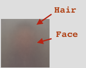
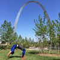
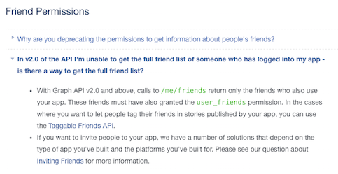

Face Mash
Jul 20, 2016If you combined photos of all your friends' faces, what would it tell you? That's the question I was curious about.
What could you discern about the commonality of gender of your friends, how about race?
This is what emerged for my friends:
Constructing the Image
Adding One Image at a Time

The above gif illustrates what it looks like when you add one image at a time.
Slowly Adding More and More at a Time

The above gif starts out by adding one image at a time and slowly adds many more images at once.
Reflection
I was a bit surprised that you could still make out what appears hair and part of the face:

because many photos are not photos of people's faces:

In terms of determining race or gender, the final image is a bit too blurred out to really make any kind of conclusions about race, gender, or anything else from it.
Context
This week at SFPC, Zach prompted us to create an image that either melded multiple faces together. This assignment was inspired by the work Nancy Berson and Jason Salavon.
Process
Not exactly the ordered I actually followed. I reorganized it for understandability...
1) Facebook API Fail
Initially tried to use the Facebook api to obtain all of my friends and photos. Turns out that you can no longer obtain all of a user's friends on facebook.

2) Manually Downloaded the Images
I went to https://www.facebook.com/jonleung137/friends, scrolled all the way down, and clicked File > Save which gave me all the images inside a folder.
3) Obtaining Photos Sorted by Friend Interaction Frequency
Facebook uses some kind of not very accurate algorithm to determine who you interact with more and who you interact with less. I wanted the photos to be sorted by this super fuzzy system.
To obtain the images, I did the following:
-
Scrolled all the way down.
-
Opened the Chrome console
-
Copied and pasted the entirety of the minified JQuery code into the console
-
Ran this code in the console which builds a series of
wgetcommands that I can run in bash and copies the code to my clipboard12345var data = "";$.each($(".uiList._262m._4kg li div a img._s0._rv.img"), function(i, img) {data += 'wget -O ' + i + '.jpg \"' + img.src + '\"' + '\n'});copy(data); -
Paste the code it gives me back into a
.shthat I run12345wget -O 0.jpg "https://scontent-lga3-1.xx.fbcdn.net/v/t1.0-1/c31.0.100.100/p100x100/12553002_10204845042917344_5549521851422223829_n.jpg?oh=fd45978c63e265135e813a1170d4d0c1&oe=58366F94"wget -O 1.jpg "https://scontent-lga3-1.xx.fbcdn.net/v/t1.0-1/r90/c0.50.100.100/p100x100/10245434_10203348801465430_1552392502088381112_n.jpg?oh=ef2c086759f0d191a0dbfb58cfc1510d&oe=58376F81"wget -O 2.jpg "https://scontent-lga3-1.xx.fbcdn.net/v/t1.0-1/p100x100/5232_10153546669894355_4063517365387124125_n.jpg?oh=e424aa502ef0a87455a37a76199dc429&oe=5830D799"wget -O 3.jpg "https://scontent-lga3-1.xx.fbcdn.net/v/t1.0-1/p100x100/12804886_10208681677458375_4116887309452467904_n.jpg?oh=51e4c820cfddb5954ecedead8ceb37ca&oe=581E6055"# ...
4) Writing the Code
Psuedocode
Commits:
See the commits to my project here:
Note, my commits are currently not the most organized for external consumption ...
Future work
Facial Detection
Instead of using all images directly as they appear on Facebook (because there is a lot of noise from that), I want to use a facial recognition library to:
- Exclude all photos that don't have frontal facing photos in them
- Properly crop and resize the photos so that all the faces are the same size and orientation (see this for what I'm talking about).
Obtain Higher Resolution Images
- You can publicly access Facebook photos from just knowing someone's Facebook User ID
- Since the user's ids are in the webpage, we can extract the IDs from there
Combine Images Together
- Instead of loading more than 2000 individual images, combining the images together into a sprite sheet with ImageMagick would be ideal.
Party
Huzzah! I've finished my first piece of documentation! <3 Peace y'all, I'm getting ramen...